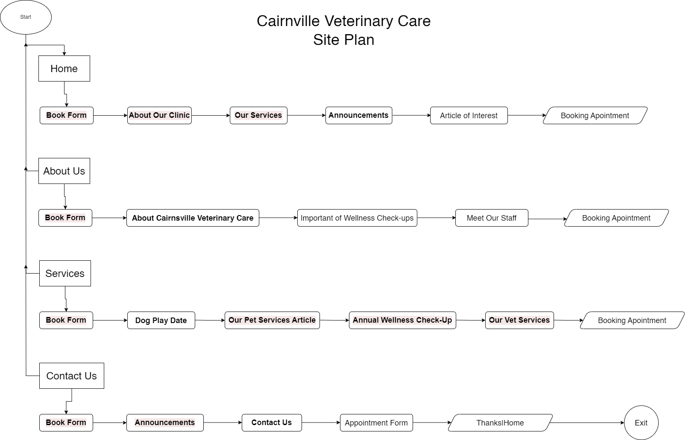

Name: Kingsley Ozioko
The goal of the website is to enhance Cairnsville Veterinary Care's online presence and expand their reach within the community. The mission is to increase customer engagement and facilitate access to information about the veterinary services offered, ultimately leading to an increase in appointments and client satisfaction.
The site's success will be evaluated through metrics such as:
Appointment Requests: Measure the increase in appointment requests through the website compared to previous channels.
User Engagement: Monitor the time spent on the website, page views, and interactions with contact forms and appointment booking features.
Client Feedback: Gather feedback from clients regarding the ease of use and usefulness of the website.
Conversion Rates: Track the percentage of website visitors who book appointments or sign up for services compared to total visitors.
Pet Owners in Cairnsville: Specifically, families and retirees who consider their pets as integral members of their households.
Design Consideration: Emphasize friendly and approachable design elements, use language that resonates with pet owners, and provide comprehensive information about services and staff.
Potential New Clients: Individuals seeking reliable and compassionate veterinary care in the Cairnsville area.
Design Consideration: Highlight testimonials, promotions, and the expertise of the staff to instill trust and encourage new clients to book appointments.
